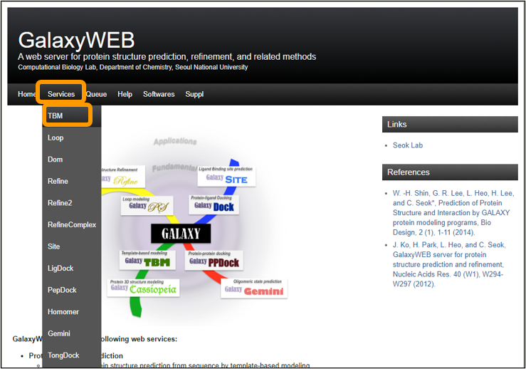

Software Tutorial: Using Homology Modeling to Predict the Structure of the SARS-CoV-2 Spike Protein
In this software tutorial, we will apply three popular software resources (SWISS-MODEL, Robetta, and GalaxyWEB) that use homology modeling to predict the structure of the SARS-CoV-2 spike protein. Recall from the main text that this protein is a homotrimer, meaning that it consists of three identical protein structures called chains. In what follows, we will predict the sequence of a single chain.
The details of how the three software resources presented in this lesson differ are beyond the scope of our work in this course. If you are interested in understanding how they each implement homology modeling, then we suggest that you consult the documentation of the appropriate resource.
SWISS-MODEL
To run SWISS-MODEL, first download the sequence of the spike protein chain: SARS-CoV-2 spike protein chain.
Next, go to the main SWISS-MODEL website and click on Start Modelling.

On the next page, copy and paste the sequence into the Target Sequence(s): box. Name your project and enter an email address to get a notification of when your results are ready. Finally, click on Build Model to submit the job request. Note that you do not need to specify that you want to use the SARS-CoV spike protein as a template because the software will automatically search for a template for you.

Your results may take between an hour and a day to finish depending on how busy the server is. (In the meantime, feel free to run the remaining software.) When you receive an email notification, follow the link provided and you can download the final models.
When we ran our own job, SWISS-MODEL did indeed use one of the PDB entries of SARS-CoV spike protein as its template (PDB: 6crx) and correctly recognized that the template was a homotrimer. As a result, the software predicted a complete spike protein with all three chains included. An image of our results can be seen below. You can also download our results. We will discuss how to interpret these results and the .pdb file format when we return to the main text.
 Structures of the three models of this protein reported by SWISS-MODEL. The superimposed structure of all three models is shown on the bottom right.
Structures of the three models of this protein reported by SWISS-MODEL. The superimposed structure of all three models is shown on the bottom right.
Robetta
Robetta is a publicly available software resource that uses the same software as the distributed Rosetta@home project that we mentioned earlier in this module. As with SWISS-MODEL, we will provide Robetta a single chain of the SARS-CoV-2 spike protein.
First, if you have not already done so, download the sequence of the chain: SARS-CoV-2 spike chain sequence.
Next, visit Robetta and register for an account.

Then, click on Structure Prediction > Submit.

Create a name for the job, i.e. “SARS-CoV-2 Spike Chain”. Copy and paste the downloaded sequence into the Protein sequence box. Check CM only (for homology modeling), complete the arithmetic problem provided to prove you are human, and then click Submit.
You should receive an email notification with a link to results after between an hour and a day. In our own run, unlike SWISS-MODEL, Robetta did not deduce that the input protein was a trimer and only predicted a single chain. The structure of the results from our own run of Robetta are shown in the figure below. You can also download our results if you like.
 The homology models produced by Robetta of one of the chains of the SARS-CoV-2 spike protein. The superimposition of all structures is shown on the bottom right.
The homology models produced by Robetta of one of the chains of the SARS-CoV-2 spike protein. The superimposition of all structures is shown on the bottom right.
GalaxyWEB
GalaxyWEB is a server with many available services for protein study, including protein structure prediction. GalaxyTBM (the template-based modeling service) uses HHsearch to identify up to 20 templates, and then matches the core sequence with the templates using PROMALS3D. Next, models are generated using MODELLERCSA.
Because GalaxyWEB has a sequence limit of 1000 amino acids, we cannot use the entire spike protein chain. Instead, we will model the receptor binding domain (RBD) of the spike protein, which we introduced in the main text as a variable domain within the spike protein’s S1 subunit.
First, download the sequence of the RBD.
Then, visit the GalaxyWEB homepage. At the top, click on Services > TBM.

Enter a job name, i.e. SARS-CoV-2 RBD. Enter an email address and then copy and paste the RBD sequence into the SEQUENCE box. Finally, click Submit.

You should receive an email notification within a day with a link to your results. The results of our run of GalaxyWEB along with the validated structure of the SARS-CoV-2 RBD (PDB entry: 6lzg) are visualized in the figure below. You can also download our results if you like.
 Homology models predicted by GalaxyWEB for the SARS-CoV-2 spike protein RBD. The superimposition of all these structures is shown on the bottom right.
Homology models predicted by GalaxyWEB for the SARS-CoV-2 spike protein RBD. The superimposition of all these structures is shown on the bottom right.
Interpreting the results of our software runs
In the figures above, the structures predicted by the three software resources appear to be reasonably accurate. But throughout this course, we have prioritized using quantitative metrics to analyze results. As we return to the main text, our question is how to develop a quantitative metric to compare the results of these models to each other and to the structure of the SARS-CoV-2 spike protein.